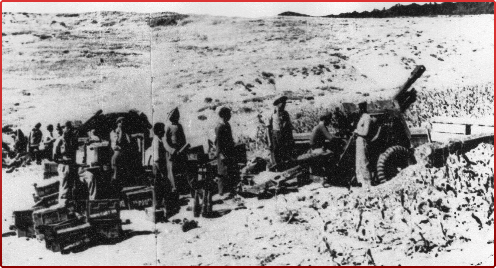

ИОСИФ СТАЛИН
ИОСИФ СТАЛИН
ГРАЖДАНСКАЯ ВОЙНА В ГРЕЦИИ
В конце мая 1945 г. в Грецию из фашистского плена вернулся старый Генеральный секретарь ЦК КПГ Никос Захариадис, который был решительно настроен на вооружённую борьбу за власть. В начале октября 1945 г. состоялся VII съезд КПГ, который отверг позицию ряда членов ЦК, считавших, что существует какая-либо возможность мирного прихода к власти, поскольку, как заявил сам Н. Захариадис, в греческой политике «существовал и существует английский, а точнее англосаксонский фактор». Поэтому уже в середине февраля 1946 г. II Пленум ЦК КПГ принял окончательное решение отказаться от участия в парламентских выборах и начать вооружённую борьбу. Это важное решение, принятое почти всеми членами ЦК, базировалось на их уверенности в том, что Москва, Белград, София и Тирана окажут им серьёзную поддержку в борьбе с противником. Поэтому в марте 1946 г., возвращаясь из Праги с VIII съезда КПЧ, Н. Захариадис встретился в Белграде с Иосипом Броз Тито, а затем прибыл в Крым на встречу с самим И. В. Сталиным, которые высказались в поддержку позиции КПГ. Помощь Москвы и Белграда позволила повстанцам резко активизировать свою борьбу против врага, окопавшихся в новом правительстве короля Георга II, вернувшегося на престол в сентябре 1946 г. Уже в конце октября было объявлено о создании Демократической армии Греции, а в феврале 1947 г. III Пленум ЦК КПГ принял секретный план «Озера», который предусматривал освобождение от монархистов всей Македонии и Фракии со столицей в Салониках. Но к началу февраля 1949 г. правительственные войска, до зубов вооружённые американцами, смогли переломить ситуацию на фронте и полностью очистить от партизанских отрядов территорию Греции. После этого Москва окончательно убедилась в бесперспективности дальнейшей вооружённой борьбы КПГ, и в апреле 1949 г. руководству КПГ было дано прямое указание прекратить вооружённое сопротивление правительственным войскам. Одновременно Москва предприняла усилия по урегулированию конфликта в Греции по дипломатическим каналам. Потеряв контроль над горным массивом Граммос, в середине октября 1949г. Демокртическая армия Греции вывела свои соединения в Албанию и объявила о прекращении огня.